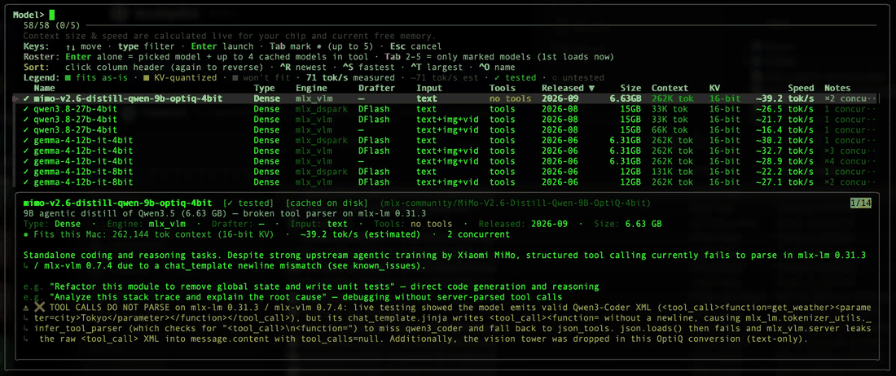

Charted routes through the chaotic LLM landscape.
Run Claude Code, OpenCode, Aider, Cline, or Pi locally on Apple Silicon — without guessing context limits, tuning MLX flags, or crashing unified memory.
brew install frank321/bushpilot/bushpilot

Reads your chip and live free memory, greys out models that won't fit, and computes safe context length, concurrency, and estimated tok/s before you download.
Polls free memory and macOS pressure (kern.memorystatus_level) continuously and tears down the server cleanly before your Mac freezes.
Attach multiple coding tools to one local endpoint and swap models live (m on the dashboard or inside your tool) without restarting sessions.
Ships a tested MLX catalog (models.json) with optional mlx-dspark speculative-decoding variants measured up to 3x faster.
brew install frank321/bushpilot/bushpilot bushpilot
bushpilot auto-splits your terminal (iTerm2, tmux, or Terminal.app) to start the server dashboard and attaches your coding tool.
See the Guide for .zip/source installs, two-terminal mode, and tool config, or Architecture for safety mechanics, Ollama comparison, and benchmarks.